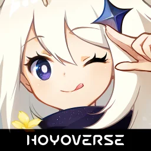

Ricardo Zhen Wei CHEW
104392756
Bachelor of Computer Science
| Category | Details |
|---|---|
| Home Town | Kuching, Sarawak, Malaysia |
| Demographic Information | I am from Kuching, Sarawak, Malaysia. I am 19 years old and currently pursuing studies in computer science at Swinburne Sarawak University. I grew up in Kuching, a city known for its rich cultural heritage and strong sense of community. My main language is English while the other language I speak are Chinese and Malay. My academic interests align with my passion for software designing, data analysis and AI. |
| Description of Hometown | Kuching, the capital of Sarawak, Malaysia, is a charming and culturally rich hometown where modernity meets tradition. Known as the "Cat City," it boasts a diverse community, a vibrant food scene with delights like kolo mee and Sarawak laksa, and a laid-back atmosphere. The picturesque Sarawak River, lively waterfront, and surrounding natural wonders such as Bako National Park and Semenggoh Wildlife Centre make it a haven for both city dwellers and nature lovers. With its friendly people, affordable living, and blend of heritage and greenery, Kuching is a warm and welcoming place to call home. |
| Great Achievement | One of my greatest achievements so far has been performing as a violinist at the prestigious ACG 2024 event, an experience that not only showcased my dedication to music but also allowed me to share my passion with a wider audience. The opportunity to be part of such a significant event was both an honor and a testament to my years of practice and commitment to my craft. Additionally, I successfully completed my Foundation studies at Swinburne Sarawak University, a milestone that reflects my academic perseverance and determination. Throughout my time in the program, I developed essential skills, gained valuable knowledge, and prepared myself for the next stage of my academic journey. This accomplishment marks an important step toward my future aspirations and personal growth. |
| Favorite Games | I have venture myself in the game community and industry. I’ve explored many different types of
games such Call of Duties (COD), Players Unknown Battle Ground, Minecraft and many more. But
here’s my favourite games out of all:

Genshin Impact
 Chess
Chess
|